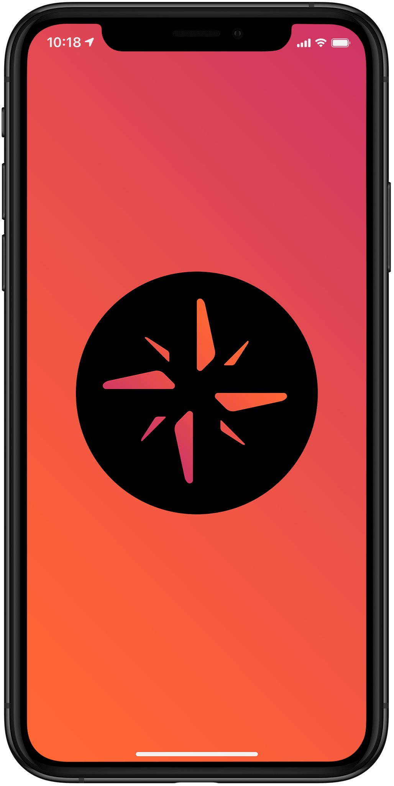
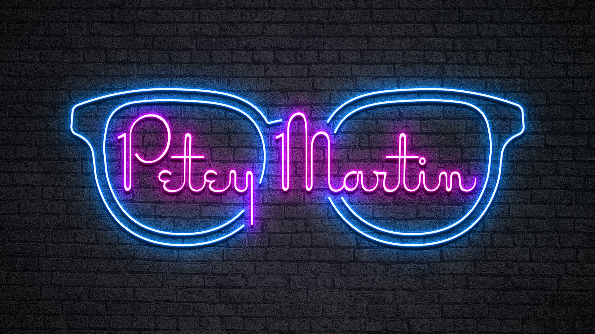
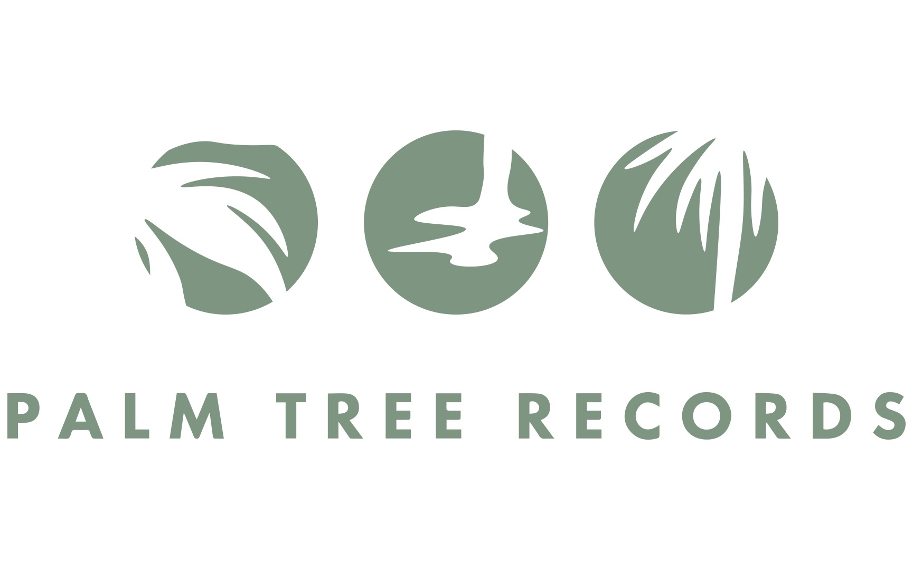

miscellaneous logos

Unused Logo Concept — Logo designed for mobile application at Sony Music. Minimal, somewhat abstract, representation of a compass.

Unused Artist Logo Concept — Request to use artist's glasses and apply neon treatment. Went unused due to a another artist already using glasses in their logo.

Artist Logo — NE is the monogram for the band 'Nuevo Elemento,' a band signed to Sony Music Latin. The band requested their logo have a neon glow treatment.

Unused Logo Concept — Logo designed for internal department 'Content Studios,' in Sony Music Corporate Offices.

Unused Logo Concept — Logo rebrand concept for Sony Music imprint label. Request was to utilize their original Palm Tree silhouette.

Unused Logo Concept — Logo designed for internal employee group promoting greener habits. Reduce, reuse, recycle... Keyword: 'Reduce'

Unused Artist Logo Concept — Tried to create unique and identifiable logo for newly signed artist to begin using on their debut single.